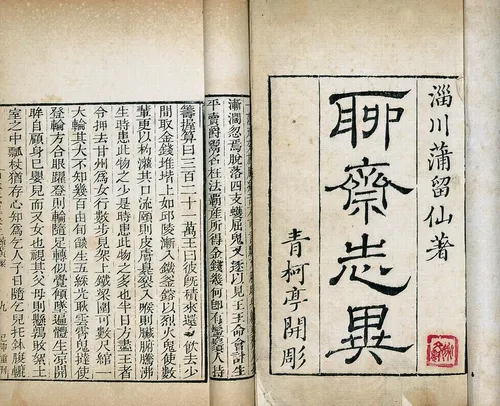

요재지이란?
고전 소개

요재지이
聊齋誌異
중국 명나라 말 청나라 초에 살던 포송령이 1670년대 산둥에서 지은
중국의 첫 기담 모음집으로 모두 12권이다. 당나라 전기 계통으로,
민간 설화에서 취재한 것으로 여자로 둔갑한 여우가 사람과 사랑하는
이야기, 신선과 이인의 이야기, 사람으로 변한 정령의 이야기와 같은
괴담 혹은 기담으로 이루어져 있다. 이야기 속에서 중국인의 정치적,
사회적 가치관과 분위기가 잘 드러난다. 포송령은 요재지이에서 자신을
'이사씨'라고 칭하여 "이사씨는 말한다." 하며 운을 떼어 단편의
결말부에 자기 의견을 달기도 한다.아시아의 무협 소설과 괴담 등에
있어 작법과 사상에 많은 영향을 끼친 책이라고 평가받는다. 1679년에
완성하고 1765년에 간행하였다.